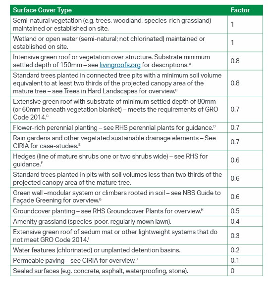

4 Week 4
4.1 Summary
4.1.1 The London Plan 2021
The Greater London Authority publishes the London Plan, which is the statutory spatial development strategy for the Greater London area in the United Kingdom, and is authored by the Mayor of London. It is periodically updated. The Greater London Authority approved a new London Plan in March 2021 that includes planning for the ensuing 20 to 25 years. Moreover, in the London Plan 2021, there is a Policy G5 Urban greening section which aims to increase the greening coverage in London urban areas. Urban greening includes a variety of options such as street trees, green roofs, green walls, and rain gardens. It can help meet other policy requirements while also providing a variety of benefits such as amenity space, increased biodiversity, mitigation of the urban heat island effect, sustainable drainage, and amenity.
The graph below is an example of urban greening (Green wall):
In order to promote greater and better urban greening, several cities have effectively implemented the “green space factor.”(UGF) The Mayor created a generic Urban Greening Factor model to help boroughs and developers determine the appropriate level of urban greening for new developments.
The table below shows some of the factors used to calculate the UGF: 
For instance, by using the factors above, the UGF can be calculated by: (Factor A x Area) + (Factor B x Area) + (Factor C x Area) etc. divided by Total Site Area. The Mayor recommends a target score of 0.4 for residential developments and 0.3 for commercial development.
4.2 Applications
The suggested data for supervising the greening area in London is that using the data from Copernicus which the UK involved from 1 January 2024. Due to the fact that the policy not only require the area of greening but also the water features in the city. Therefore, remote sensing might be useful for the London government to verify and monitor. As it concluded by Zehua (2024) in his paper, there are several applications of remote sensing technology. For example, monitoring vegetation with an unmanned aerial vehicle (UAV) and laser radar (LiDAR) can aid in monitoring the health and changes of vegetation. Additionally, thermal infrared remote sensing and satellite remote sensing can monitor water quality and level fluctuations. Furthermore, several studies have already been conducted to investigate the use of remote sensing technology to monitor forest areas. A study (Huimian Li et al., 2023) uses single Landsat 8 (L) remote sensing data, single Sentinel-2 (S) remote sensing data, and combined Landsat 8 and Sentinel-2 (L + S) data as data sources. In addition, four machine learning methods were applied. The study demonstrates that machine learning models based on separate Landsat 8 OLI and Sentinel-2 satellite remote sensing data can accurately predict the AGC and spatiotemporal distribution of the Shanghai urban forest. However, the research mentioned above are only focus on distinguishing forest and other land-covers from the map without classifying them with height and species. Instead, a research which done by Turner and his colleagues (DAVID P. TURNER et al., 2004) established a method with the aid of Biome-BGC carbon-cycle process model and repeated remote sensing data for several years, they successfully distinguished the land-cover type and stand age of forest in target areas.
4.3 Reflections
As it mentioned in the previous part, the UK participates into the Copernicus plan from 2024. Therefore, the access to previous years data might be a trouble, so it is recommended to access by other ways such as Landsat and Sentinels.